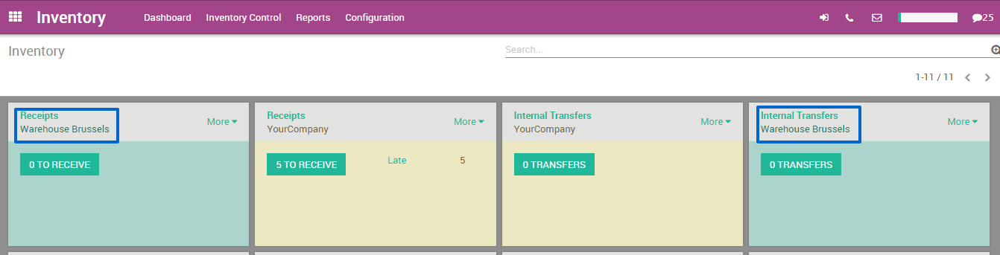
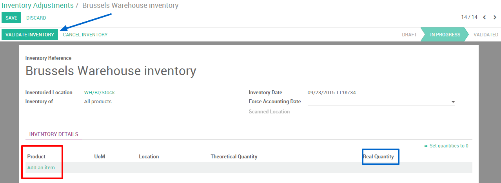
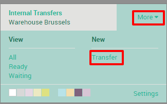
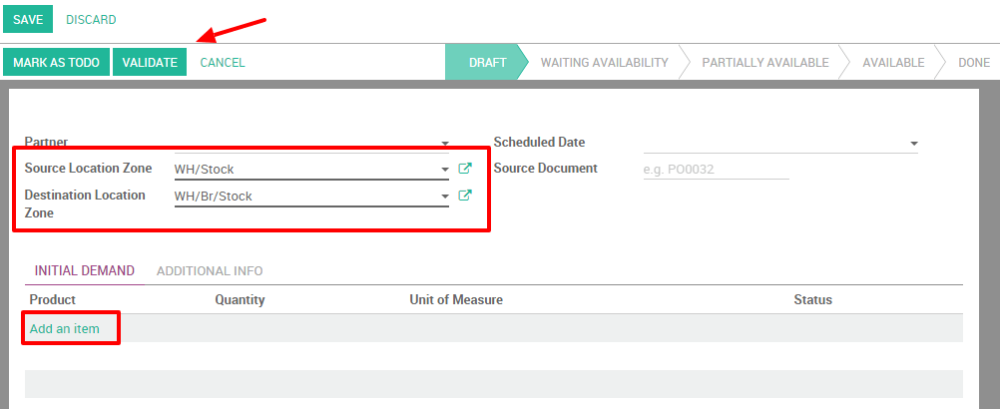

如果有不同的仓库，并且想在不同仓库间调拨货物。因为有了YuanCloud这些变得都很容易。
配置
首先需要选择多库位选项：在 库存模块 **中的`配置 --> 设置` 。然后勾选**仓库进行多库位管理**选项。不要忘了勾选之后点击**应用。

小技巧
如果想在你的仓库中管理多库位以及路径就需要勾选该选项。
创建一个新的仓库
下一步是创建新的仓库，在库存模块，点击：[UNKNOWN NODE title_reference]。现在就可以通过点击**创建**创建新的仓库。
输入仓库名称和一个简称，简称最多只能5个字。

小技巧
需要注意的是**简称**非常的重要，它会出现在调拨单以及其余的仓库文档中，定义的时候需要足够简单并且易于理解(例如：WH/[库位的首字母])。
如果你回到仪表盘，新的仓库会自动的生成操作类型。
创建一个新的库存
如果你创建了一个新的仓库，你可能在此之前已经有一些实际的库存。这样的话你就需在YuanCloud中创建一个盘点。如果没有库存的话，就可以跳过该步骤。
进入库存管理应用模块，选择：[UNKNOWN NODE problematic]库存控制--> 库存调整 [UNKNOWN NODE problematic]。通过点击**创建**创建新的盘点。在**盘点参照**，[UNKNOWN NODE problematic]日期**中输入内容并确保选择正确的仓库和库位。

接下啦，点击**开始盘点**。会弹出一个你可以输入当前产品的窗口。选择添加新的条目并确认仓库中的**实际数量**。理论数量不能更改，因为它代表着采购和销售相关的计算数量。
一旦记录了所有的产品，不要忘了校验你的库存。
创建内部调拨
最后一步就是创建内部调拨。如果你想把2片产品从第一个产品呢转移到布鲁塞尔的另外一个仓库，可以按照以下步骤：
在仪表盘上，选择两个仓库中的其中一个内部调拨。要这样做，点击菜单 。
一个新的窗口会打开，在这里你可以选择源库位区域(这里是**旧的仓库**)和目标区域(在这里是位于布鲁塞尔的**新**仓库)。
通过点击**添加新的条目**添加想要调拨的产品，做完之后不要忘了**确认**或者**标记为待做**。
如果你选择了**确认**，YuanCloud会把调拨所有的数量。
如果你选择了**标记为代办**，YuanCloud会把调拨单转换为**等待可用**状态。点击**保留**来保留源仓库中需要保留的数量。
也有可能手工地调拨所有产品：
通过仪表盘在源库位中选择调拨单。

选择正确的调拨单

3.在右下角铅笔的图标上点击打开详细操作窗口。在新的窗口中你可以手工的输入你想处理的产品数量。

小技巧
如果你决定部分的完成调拨单(例如因为未知事件造成了部分产品不能发货)，YuanCloud会自动的问你是否需要创建一个**未完成单子**。如果你想稍后完成剩下部分就创建一个未完成单子，如果不打算稍后进一步操作就不创建未完成订单。